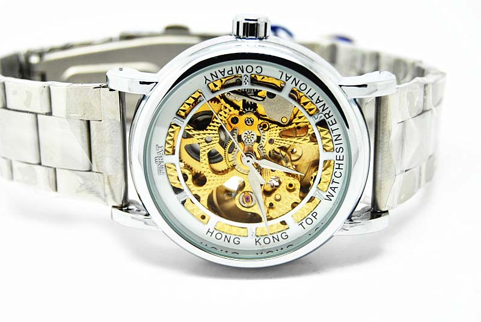
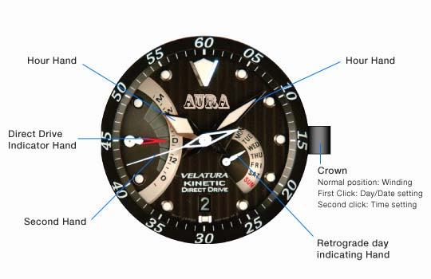

Kinetic Direct Drive
Seiko Kinetic Direct Drive is the
embodiment of the Seiko's ‘emotional
technology’. It offers valuable additions
to the ecological and convenience
advantages of
every Seiko Kinetic watch.

Power Reserve Indicator Function

Real-time Power Indicator Function
Dial Layout
Spring Drive
1977. A young Seiko engineer started to wonder how he could make
his dream of "the ever-lasting watch" come true. In his vision: a
watch wound by a mainspring and with one-second-a-day accuracy,
a precision that only the finest electronic watches could deliver.
This engineer, Yoshikazu Akahane, was a persistent and dedicated man.
It took him 28 years, countless set-backs and over 600 prototypes, but
he and his team eventually succeeded by inventing new technologies in
every aspect of the watchmaker's art. In 2005, Seiko Spring Drive came of age.

Source of energy
The sole motive power is the mainspring
Transmission
The power of the mainspring is transmitted via gear train to the hands
and to the Tri-synchro regulator.
Regulation
The Tri-synchro regulator controls the speed of the glide wheel and
the hands by electromagnetic braking.
Features of Kinetic Direct Drive
Three Key Innovations
Developed by SEIKO especially for Spring Drive, the Tri-synchro regulator
1. Controls the mainspring's mechanical energy.
2. Converts a small part of this energy into electricity to power the quartz crystal.
3. Generates a magnetic force to regulate the speed of the glide wheel.